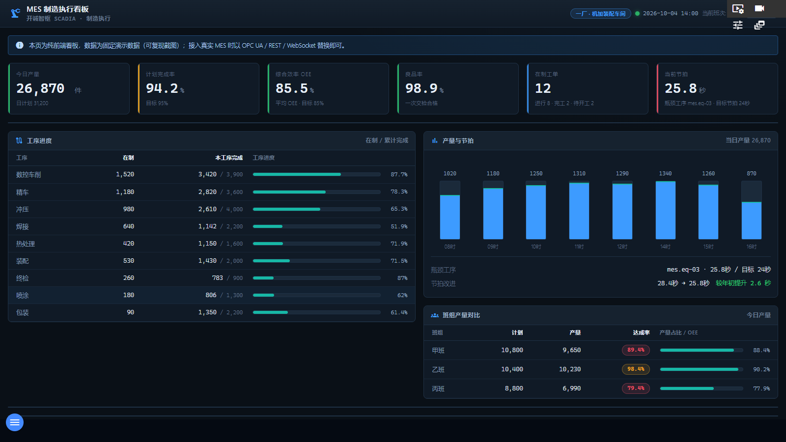

MES 看板以制造执行视角汇总一厂 · 机加装配车间的生产全貌：6 张核心 KPI（产量、完成率、OEE、良品率、在制工单、节拍），生产工单进度表，工序进度、产量与节拍趋势、班组对比、设备 OEE 与质量不良帕累托等面板。本页为纯前端看板，数据为固定演示数据（可复现截图），页面顶部的蓝色提示条即为此说明；接入真实 MES 时以 OPC UA / REST / WebSocket 替换即可。

图 7-1 MES 制造执行看板（当前交付版实际截图）
| 区域 | 说明 |
|---|---|
| ① 顶栏 | 标题「MES 制造执行看板」/ 副标题「开诚智枢 SCADIA · 制造执行」；右侧徽章「一厂 · 机加装配车间」、报表日期时间与「当前班次： 乙班」；右上角灰色标签「演示数据」。 |
| ② 演示提示条 | 页面首行蓝条：「本页为纯前端看板，数据为固定演示数据（可复现截图）；接入真实 MES 时以 OPC UA / REST / WebSocket 替换即可。」 |
| ③ KPI 卡（6 张） | 今日产量（件，附日计划）、计划完成率（%，附目标）、综合效率 OEE（%，附平均 OEE 与目标）、良品率（%，附一次交检合格）、在制工单（附 进行/完工/待开工 计数）、当前节拍（秒，附瓶颈工序与目标节拍）。达标绿色、预警黄色、超标红色。 |
| ④ 生产工单 | 表格列：工单号、产品（如 液压阀体 HV-32、齿轮轴 GS-18）、工序（数控车削/精车/冲压/焊接/热处理/装配/终检/喷涂/包装）、计划量、完成量、进度（进度条+百分比）、状态（已完工/进行中/待检验/异常停线/待开工）、班组（甲班/乙班/丙班）。 |
| ⑤ 工序进度 | 各工序的在制/累计完成进度条（副标题「在制 / 累计完成」）。 |
| ⑥ 产量与节拍 | 当日产量柱状对比 + 「瓶颈工序」面板（当前节拍 vs 目标节拍）+「节拍改进」趋势（较年初提升 2.6 秒）。 |
| ⑦ 班组产量对比 | 甲/乙/丙三班的产量占比与 OEE 对比条。 |
| ⑧ 设备 OEE | 表格列：设备（加工中心 S1、焊接机器人 R2、冲压机 P3、注塑机 I4、装配线 L5、热处理炉 F6、喷涂线 C7、包装机 W8）、可用率、性能、良品率、综合效率 OEE、在制；副标题「OEE = 可用率 × 性能 × 良品率」。 |
| ⑨ 质量与不良率 | 缺陷类别帕累托：尺寸超差、表面划伤、毛刺、焊缝气孔、装配错位、涂层色差；列含检验数、数量、不良率、PPM 百万分之不良、帕累托占比。 |